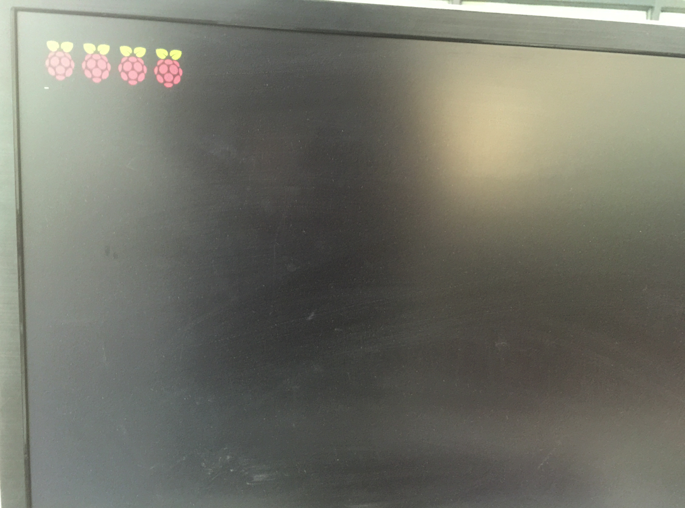

HDMI链接显示器及开机
有2种显示方式：
- 可以直接用HDMI数据线将树莓派与显示器链接（可直接使用）
- 使用配套的小显示屏（需要配置才可以）
1. 树莓派直接连接显示屏
1.1 用HDMI数据线链接树莓派和显示器

1.2 给树莓派接上电源（自动开机）

2. 树莓派链接专用显示屏
2.1 配置
配置方法
较为简单的方法是连接键盘和电脑的HDMI显示器，直接进入系统图形界面进行操作或者通过终端进行配置(需要熟悉 vim 编辑器)
修改/boot/config.txt, 在桌面右击选择打开终端,然后在终端中执行：
sudo vi /boot/config.txt
修改如下:
framebuffer_width=800 framebuffer_height=480 hdmi_force_hotplug=1 hdmi_group=2 hdmi_mode=87 hdmi_cvt 800 480 60 6 0 0 0 dtoverlay=ads7856,penirq=22,speed=100000,xohms=150 dtparam=spi=on保存退出，然后重新启动Raspberry pi即可.